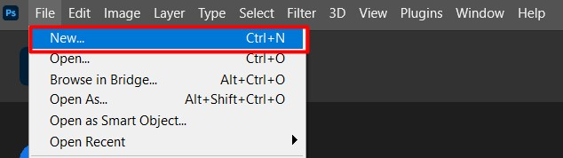
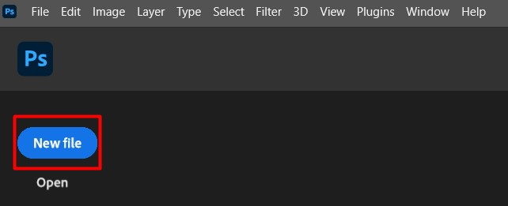
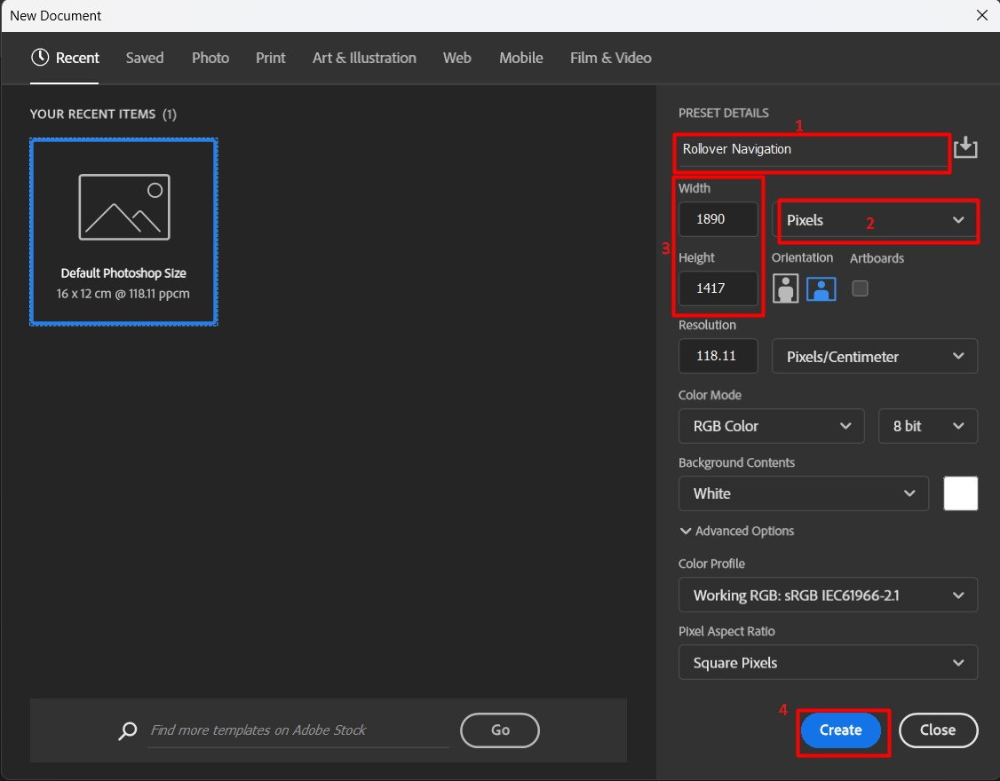
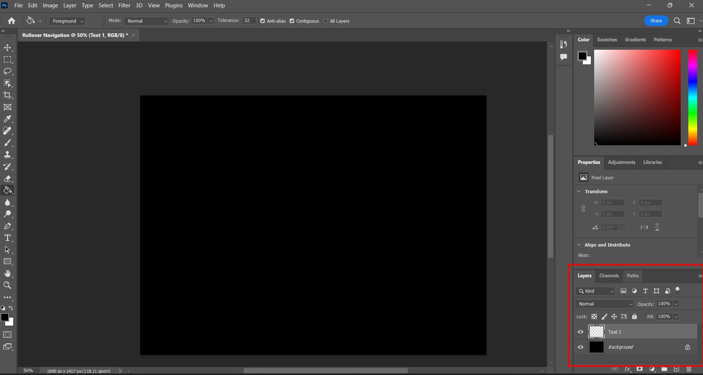
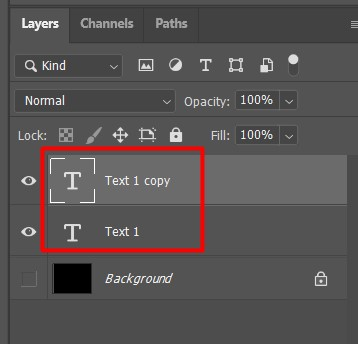
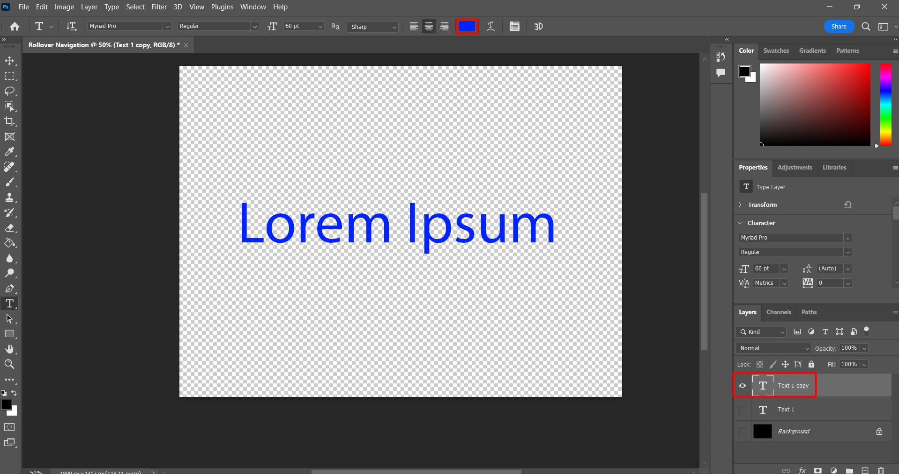
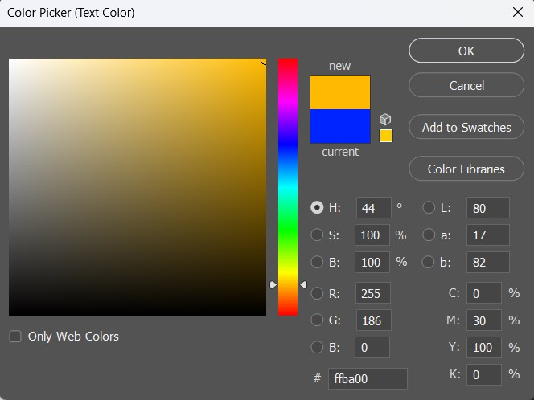
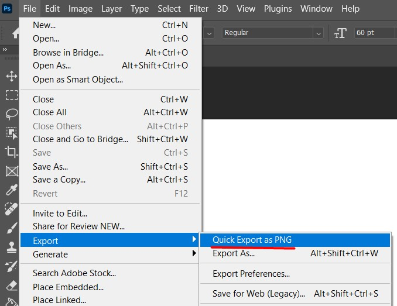

Create rollover buttons for a website
This section will showcase how to create rollover buttons which require 2 images of texts with exactly identical placement/size while changing in color.
Rollover buttons where mouse over causes the button image to change (i.e. change to a darker shade) provide clear visual feed back to the website's user about their potential selection.
Create new empty file
- Method1 Select file from the top-left navigation bar and click new. 
- Method2 Click the blue New file button to the left, below the navigation bar.  Completing either of the steps will bring up a New Document window.
Choose desired image size
Following is a image of the New Documents window that is labeled with necessary steps.

-
Enter the desired name of the file in the Present Details field.
-
Select the units of the file that you will be working with.
-
Enter the dimensions for width and height in said dimensions.
-
Click the blue Create button on the bottom right.
Once completed, your workspace will show a white rectangle with the specified dimensions/units.
Equip paint bucket tool, change color
-
Click and hold the Gradient tool icon on the left tool bar.
-
Select Paint Bucket tool.

Once complete, the mouse cursor will change to a paint bucket icon when hovering over the workspace.
Paint background layer
-
Select your desired background color from the color pallette to the top-right of the workspace.
-
Click on the white rectangle on your workspace. The rectangle will change to the specified color.

Create text layer, change color (default)
-
Create a new Layer: select Layer on the top navigation bar -> New -> Layer
- Or use shortcut shift+ctrl+N

- Or use shortcut shift+ctrl+N
-
Enter an easily distinguishable name (i.e. Text 1) and click OK.

- Once complete, there should be a new Layer visible on the Layers tab to the bottom right of your workspace. 
-
Hide the Background layer by clicking the eye shaped icon next to the Background layer.
- The workspace should now be a checkered rectangle.
-
Click the Horizontal Type Tool on the left toolbar then click on the workspace to type in the text for your button.
-
Select the font, size, color of your text from the top to ensure it will be visible against the background color.

Duplicate text layer using Ctrl+J (hovered)
- Make sure the text layer is selected and press ctrl+J to copy it. Once complete, another layer with the identical name appended by copy will appear in the layers tab.

Edit hovered text layer
-
Click on the eye icon next to the original text layer to hide it. Now, only the copied text layer should be selected.
-
Click on the colored square at the top to edit the text color of the copied layer. 
-
Select the desired color from the pop-up color pallette and click OK. Color that contrasts with both the original text and the background color is recommended. 
Export Copy as png
-
Click the eye icon for the background layer to turn it back on.
-
Click File on the top navigation bar, then go to Export -> Quick Export as PNG. 
-
Save the png file in the desired file directory.
Hide hovered layer and export original
-
Hide the copied text layer by clicking the eye icon.
-
Show the original text layer by clicking the eye icon.
-
Repeat the previous png export procedure as before: File -> Export -> Quick Export.
- Finished! There should now be two png files with identical background color and text location/size, but with different colors.